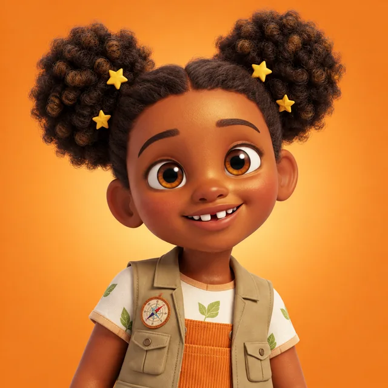
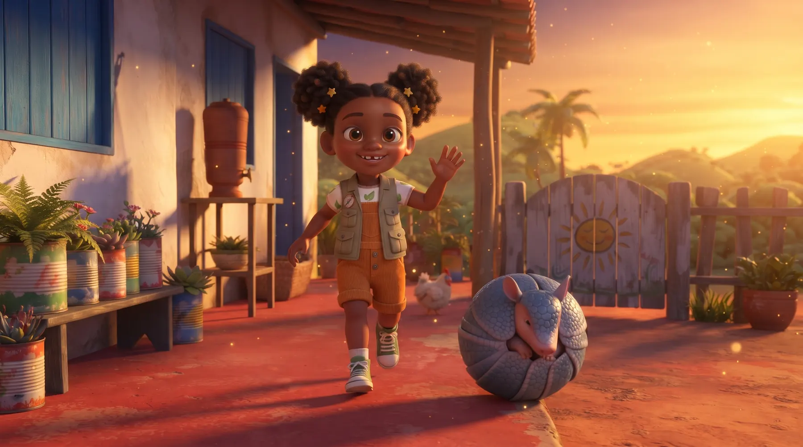
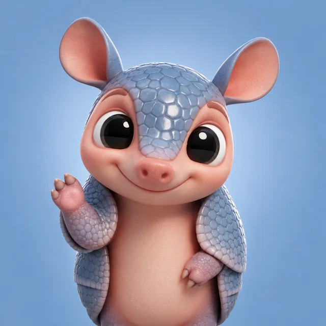
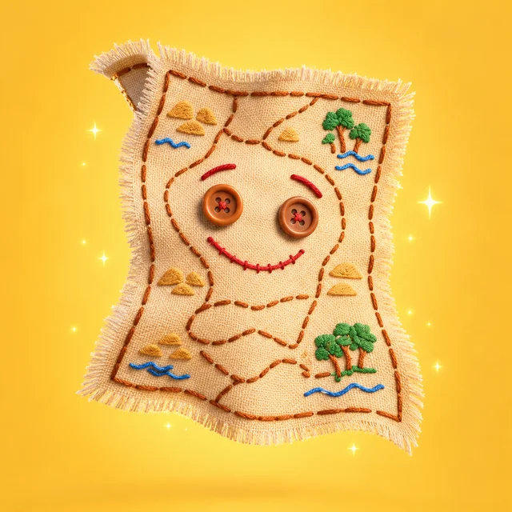
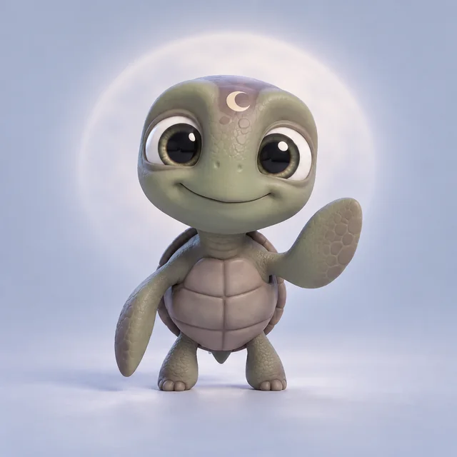
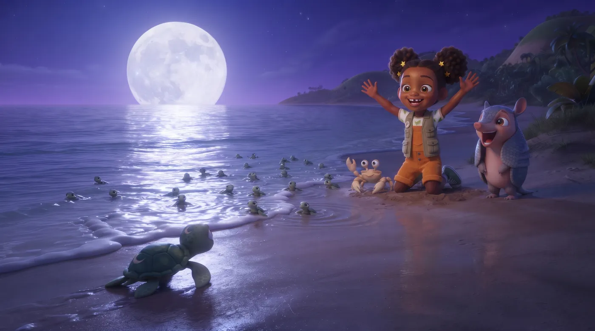
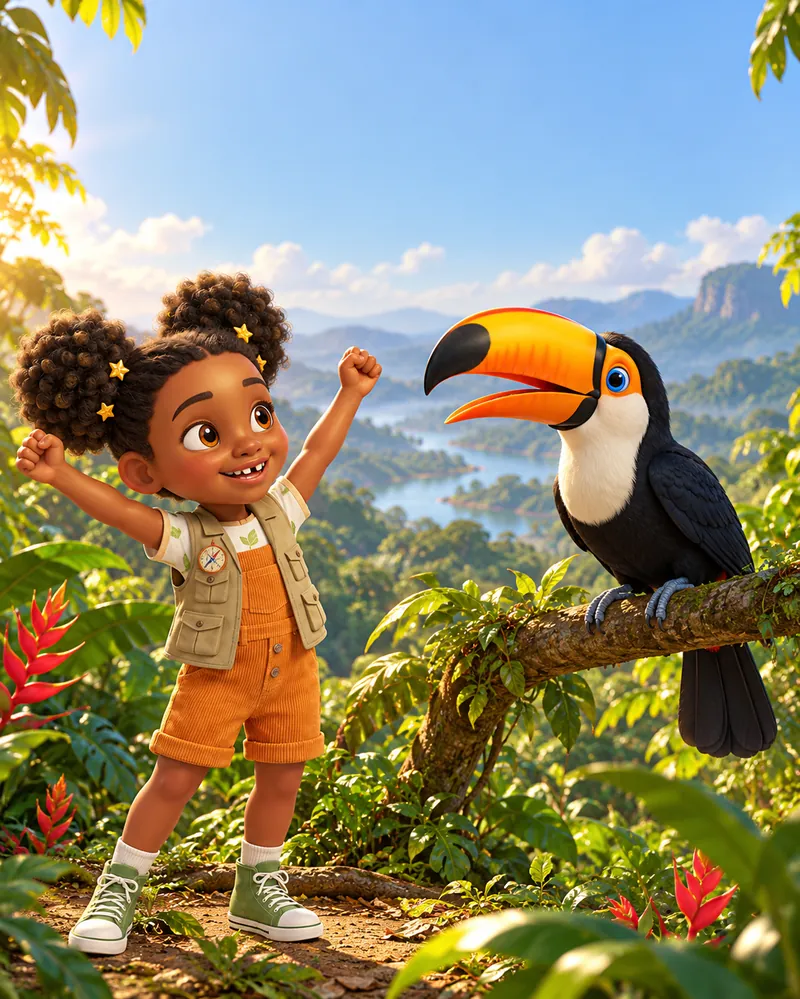
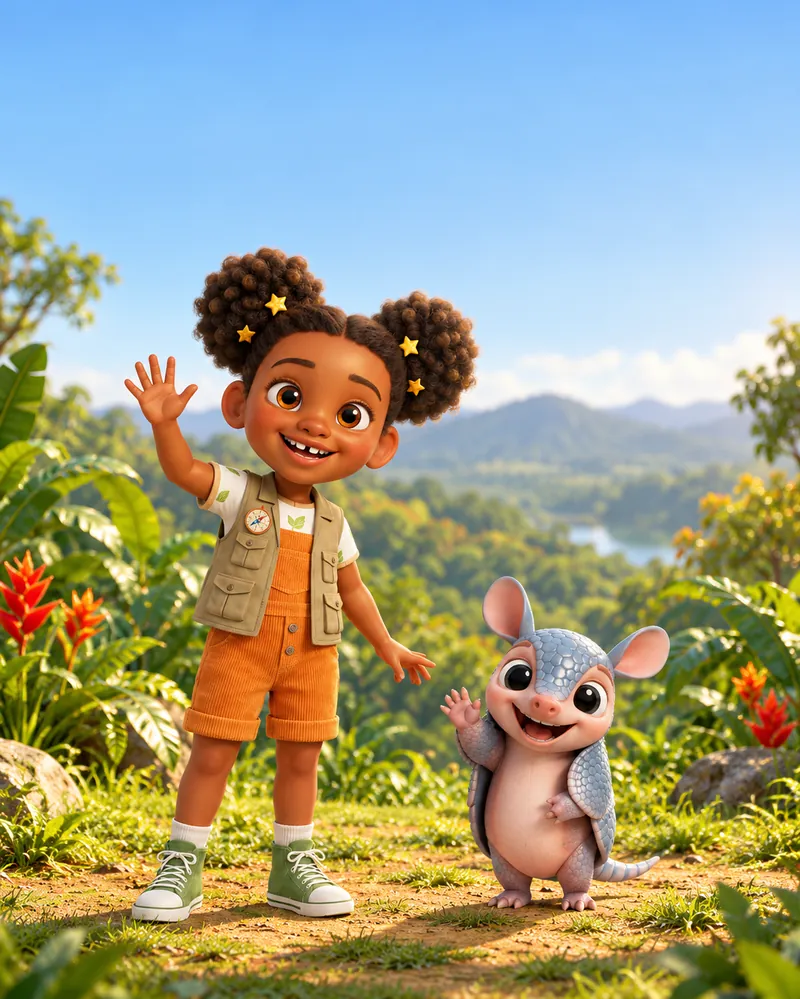

Zuri
Tem 7 anos, é curiosa e corajosa. Nunca perde uma aventura e adora ajudar os bichos.
Bordão: "Vamos descobrir juntos?"
Aventuras pelos bichos e lugares do Brasil, com música, curiosidades e uma palavra em inglês em cada episódio.

Uma exploradora, uma avó contadora de histórias e bichos do Brasil que viram amigos para sempre.

Tem 7 anos, é curiosa e corajosa. Nunca perde uma aventura e adora ajudar os bichos.
Bordão: "Vamos descobrir juntos?"

O melhor amigo da Zuri. Meio medroso, muito engraçado e sempre pronto para rolar.
Você sabia? O tatu-bola só existe no Brasil e é o único tatu que vira uma bolinha completa.
A avó da Zuri sabe todas as histórias da mata e sempre tem um conselho na ponta da língua.
Ditado: "Quem escuta a mata, nunca se perde."

Mora no bolso do colete da Zuri e canta o caminho de cada aventura.
Bordão: "Primeiro… depois… e por fim!"
O quati mais fuxiqueiro do Brasil. Vive aprontando, mas tem um bom coração.
Para parar ele: "Fuxico, nada de fuxicar!"

Uma tartaruguinha que se perdeu dos irmãos e precisou da turma para voltar ao mar.
Em inglês: lua é moon!

A Lua se perdeu dos irmãos e precisa voltar para o mar. Será que a turma consegue ajudar?
Baixe, imprima em folha A4 e pinte com seu pequeno. Depois mostra pra gente nas redes!
Um PDF só, pronto para imprimir.
Brincadeiras para fazer longe da tela e, se quiser, jogos educativos para jogar junto: contar, memória e Quem sou eu?

Seu pequeno vira tartaruguinha e encontra o mar seguindo a luz, igual na aventura da Zuri.
Sempre com um adulto por perto e com o chão livre.

Conte os bichos do Brasil em português e em inglês: um tatu-bola (one), duas araras (two), três tartaruguinhas (three)… até dez vaga-lumes (ten)!
Fale junto com a criança e repita três vezes, como a Zuri faz.
Bichos da turma ·
Frase da semana
Para os pais: toque no cartão para ouvir a palavra em inglês. Repitam três vezes juntos, depois procurem a palavra pela casa ou no caminho da escola. Na semana seguinte, faça um "lembra?" com as palavras antigas.
Episódios curtos, pensados para assistir junto. Cada aventura segue a mesma estrutura, porque a repetição ajuda a criança pequena a acompanhar.
Todo episódio traz um fato real sobre um animal ou bioma brasileiro, checado antes de ir ao ar.
A Zuri apresenta a palavra, repete três vezes e convida a criança a falar junto.
Protagonistas negros e brasileiros, porque toda criança merece se ver nas histórias que assiste.